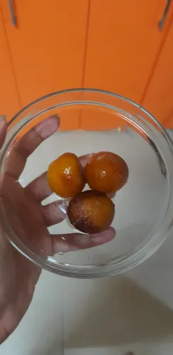

Little, fried balls of a milk-based dough that are soaked in a syrup scented with green cardamom, saffron, rose water….sslllssslppp. The floral, fruity quality of the syrup is particularly important. The garam garam(hot) aroma! After two days of persistent requests, the ‘instant mix’ pack was opened and the mother had to give in. This was all about Friday. Today was a Saturday. No alarms rang. Nobody came to wake me up, but I had some plans made. We had to meet in college. I got a call and woke up to rush through my morning chores to leave my house at 10:15. Aai was already out for work but had still cooked Jeera rice and dal fry. Now here’s a thing about mothers. They can be late or on time, for their work, but never miss cooking for any of our tiffins or making sure that there is cooked food in sufficient amounts till she is back. So I had my tiffin ready. I hurriedly packed it and opened the refrigerator for I don’t remember what andddd the sweet, tasty smell spread across! Hawraat me couldn’t resist but pack up four sugar sweet balls of Gulab jamuns for me and my friends. Entered the college with a bunch of work and got done with some. Gave library books’ fine. Ninety rupees! What nonsense. Reissued some. After some work deadlines had been met we decided to take a break. We went in our very famous college canteen, oh sorry “Cafe”.They make us call it a Cafe but it is worth it. Till that time I had told them twice or thrice about my extra, chotu tiffin but we already had so much that we decided to eat it in the next break that we would want to take. Finally the patience decided to revolt but work had no plans on being completed. Yet, we met our deadlines and a friend who desperately wanted coffee was being accompanied by the two of us. I also couldn’t resist eating those Gulab jamuns and hastily opened them on the stairs ! I was about to show my friend on how yumn they smelt and out flew the lid on the lower stair and I exactly have no clue how- ALL THE FOUR Gulab jamuns sprung up and went rumbling down the staircase. One of them even bounced on my friend’s WHITE pants and down on the stairs and towards the floors. I………… I didn’t know what to do! On the other hand, the other friend who was already on a call with her mother was narrating her the incident on which she later told how her mother started saying “kashya ga tumhi muli.. amhi aaya sakali uthun sagla banvun deto ani tumhi asa kartat. Jeenyavar daba ughdaychi kay garaj?” and this is also exactly what my mother said when I came home. Now I craved for those Gulab jamuns more than ever. Sitting behind my friend, while coming back home, I was telling her how I HAD to eat them now when I get home. Do I love Gulab jamuns so much? No. Am I still crazy craving for them? Yes! On our way back I was telling her how everything that I have over imagined of and gotten expressively excited about, gets ruined. Like we had these plans of going on a trip with our whole family and I was super excited about getting some time to spend with one of my cousin baby brothers. This was my main reason to be excited about the trip. I remember I was in school that time and I thought about it for all the nights in that week. I was very very excited and then on the day of our departure it got cancelled. Even 2020 ruined our vacation plans. I had dreamt about that vacation for a long time. Saved reels. Bought clothes but lockdown cancelled our plan. I asked her if it was wrong to be overexcited about something because when I’m not thinking too much or not showing that amount of excitement on something, then those things always work. She said to me –
"What has to happen, Happens!"
Now I’m home writing this blog, thinking about what she said while the soft balls melt in my mouth and I’m hit with the sweet flavor of sugar milk and a hint of the rose and cardamom in the sugar syrup every time the spoon is in my mouth. A sweet picture clicked while eating the first ball. We always believe what we experience. Along with these two friends and three others we have done exciting things but decided to keep mum on them until they happen just so that they get executed perfectly. Is it that if we stop getting excited and thinking too much on things, Only then they will work perfectly? Or is it just a belief? Or do we accept “What has to happen, Happens. – Come what may!” ? Let’s keep an open end to this.
A sweet picture clicked while eating the first ball.